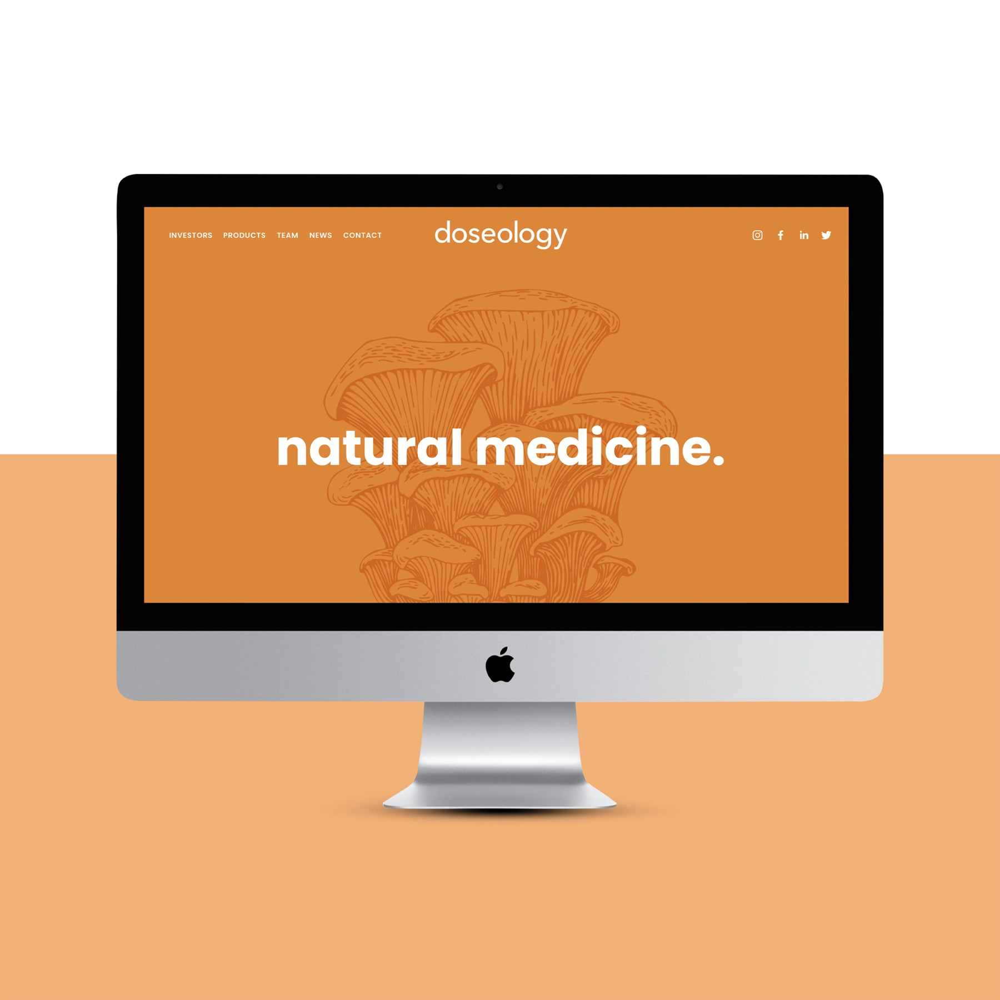
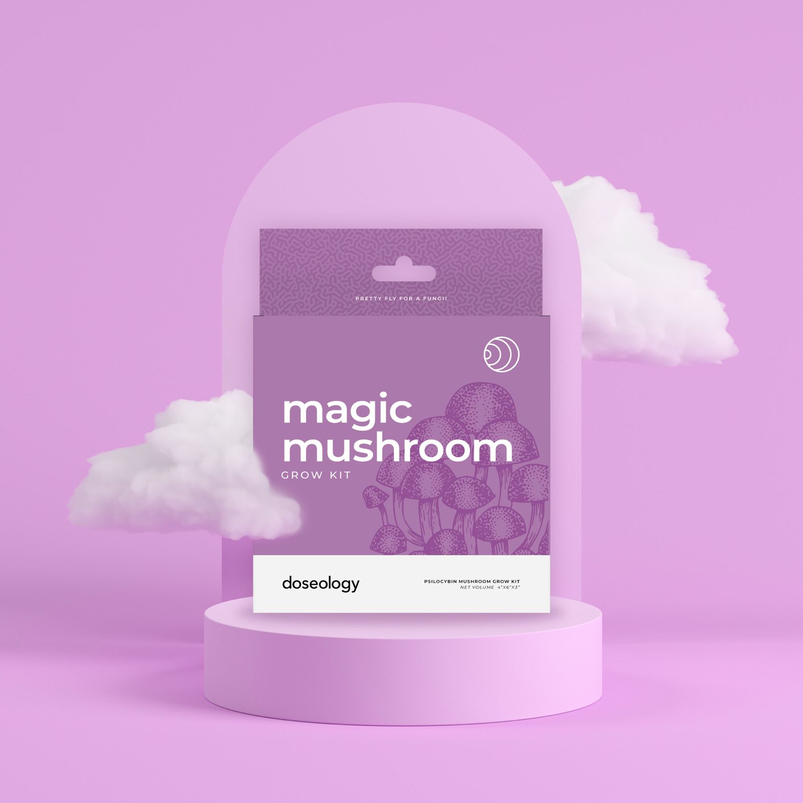
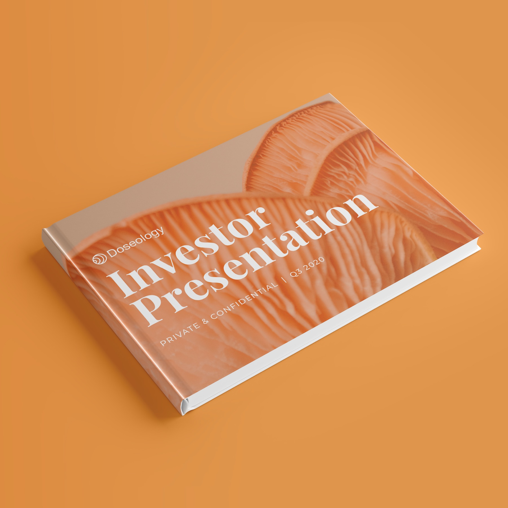

focus. rest. balance.
Doseology needed to make functional mushrooms feel useful, desirable and easy to choose. We built the brand, then rebuilt the digital path that turned interest into action.

A young wellness brand in a category full of vague promises.
Make the benefit the navigation: Focus. Rest. Balance.
Brand, packaging, Shopify, content and growth funnel.
Conversion rose 41%; DTC revenue rose 74% in 90 days.
wellness had become wallpaper.
Doseology entered a crowded supplement market with an unfamiliar ingredient and low awareness. The product story was interesting, but interest alone was not carrying enough people from the homepage to purchase.
This was bigger than a packaging exercise. The brand needed to explain what functional mushrooms could do, help people find the right product and give a new company enough substance to earn attention from customers and investors.
Novelty opened the door, but novelty did not make the range easy to understand or shop.
A clear path from a desired state to the right product—and from first visit to repeat purchase.
organize the brand around the day people want.
Instead of asking customers to become mushroom experts, we led with the outcomes they were already looking for: sharper focus, better rest and everyday balance. That language became the spine of the range, the website and the content system.
Plain-language benefits, distinctive colour and fast product recognition.
A tactile brand world that feels at home in a modern wellness routine.
One visual and verbal grammar across packs, kits, retail and digital.
one idea, all the way to the cart.
We carried the brand from business plan and investor story through packaging, product development, retail, content and e-commerce. For growth, the homepage and product pages were rebuilt around decision clarity, then supported with paid discovery, retargeting and lifecycle email.



clarity did what clarity does.
A more legible brand and a tighter commerce journey gave every paid click and returning visitor a better chance to become a customer.
Strategy, brand identity, packaging, digital experience and growth system by Smaller Agency.
Client: Doseology.